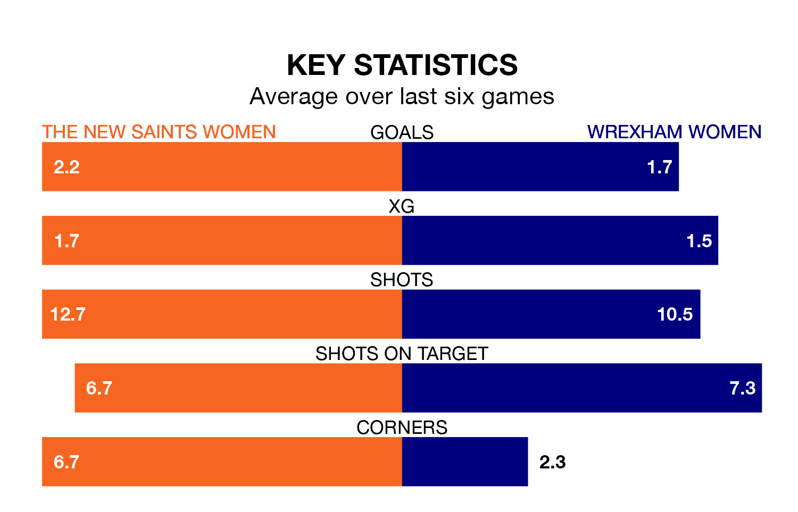

Wrexham Women travel for Wednesday's late match against The New Saints Women looking to bounce back from defeat last time out in Welsh Premier Women's League.
Wrexham, who sit third in the league after 10 games, fell to a 3-0 away defeat to Cardiff City on Sunday.
They face a The New Saints side who also lost their last match, a 4-1 defeat to Barry Town United Women, and who sit fourth in the table.
With 27 goals in 11 games so far this season, The New Saints are the league's joint-second-highest scorers with 2.5 goals per game. But they are conceding more than average too, letting in 28 goals at a rate of 2.5 per game.
Wrexham are also above average scorers, with 2.1 goals per game, compared to a league average of 1.8. They have conceded 1.4 goals per game.
The New Saints are in mixed form in Welsh Premier Women's League, with three wins and three losses from their last six games.
With four wins and two losses over that period, the visitors' form is better – they have taken 12 points from 18, compared to the home side's nine.
Updated: 09:07 (UTC), 24/01/24